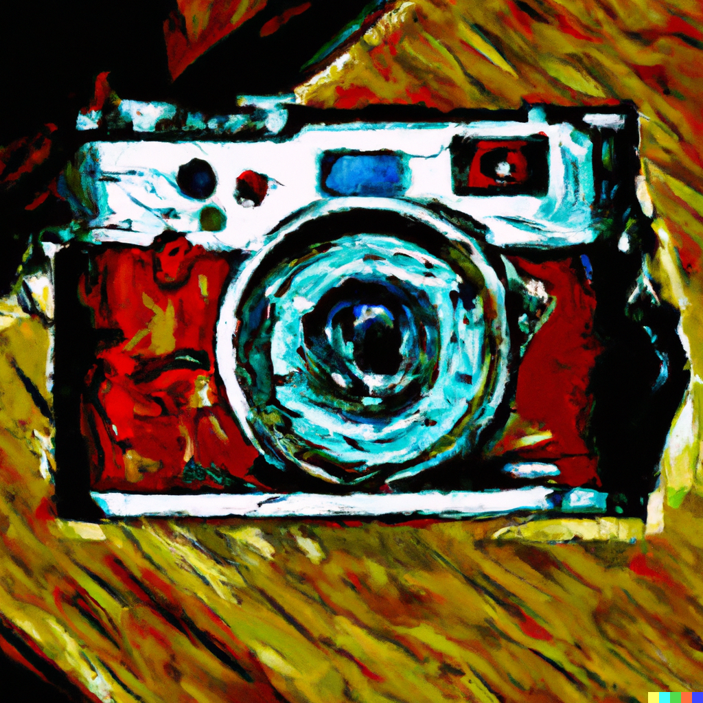
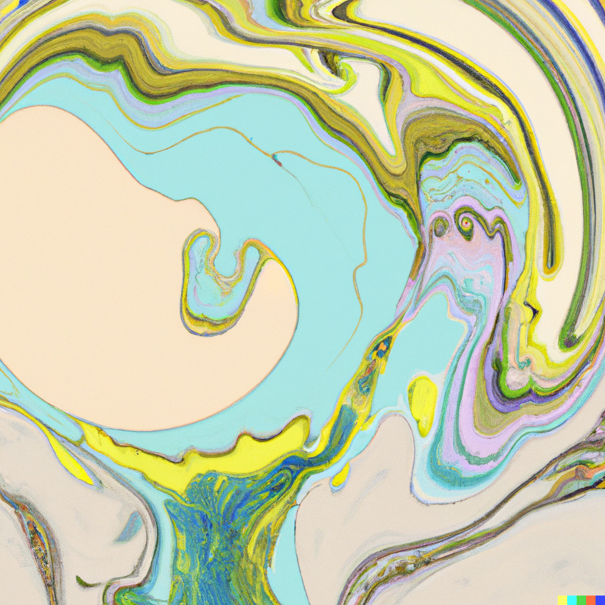
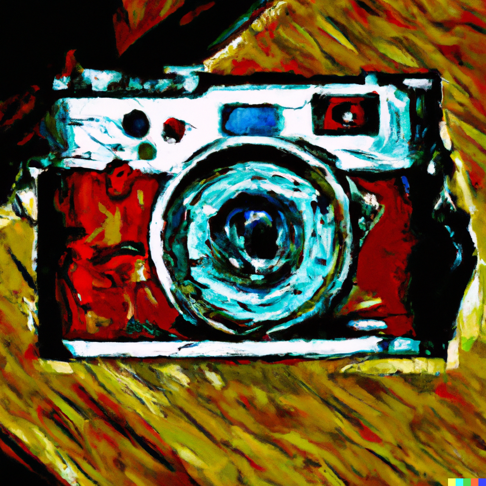
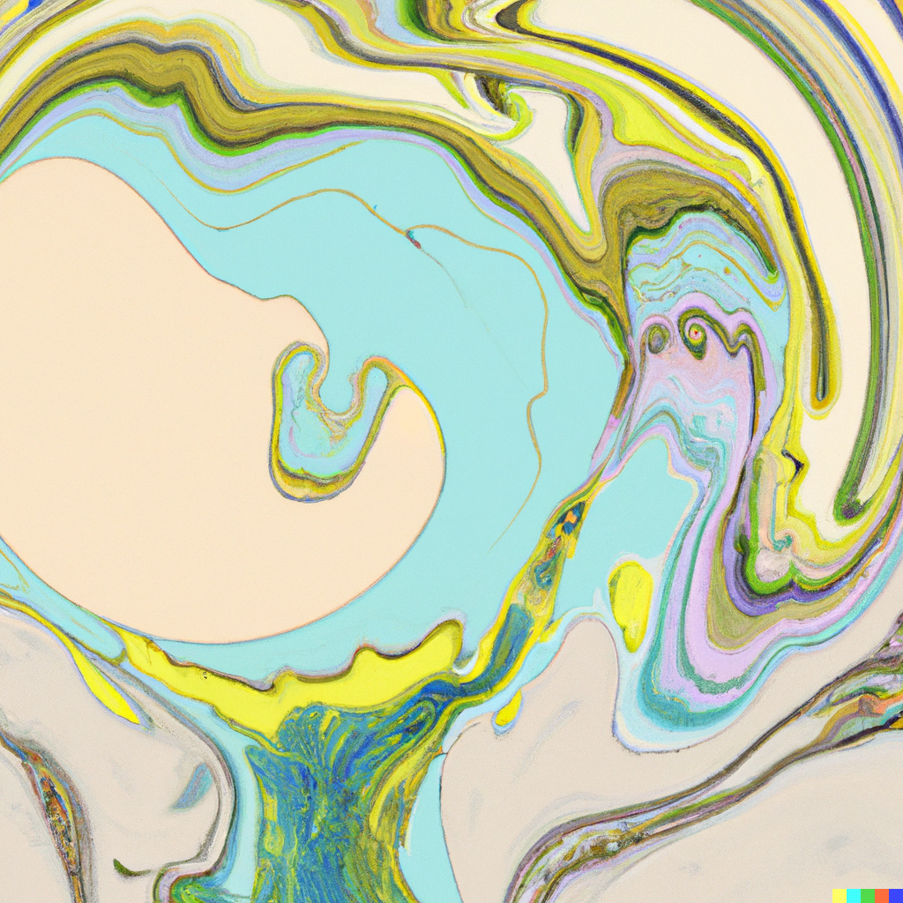

Amoo
shards of images
album
Personal Effects
Amoo,
In a tarot card reading
A asks "Are you open
to love? Are you keeping love in mind?"
Amoo, I think.
Amoo.
The word a moan
a blown kiss
the soft things it makes a mouth do.
Amoo, I thought
as he told me about the Page of Cups,
the echo of what
I've never called you.


![](../pics/c.png "How could she say
the things she does not
know. A poison
tipped arrow, she told
classmates at recess,
to the neck, hollow whistle
of it launched
from a blowgun
cutting the air between them.
According to most
definitions, I have never
been at war.
According to mine,
most of my life
spent there. Anthrax
in salt and pepper shakers,
patrol car windshields
with crosshairs painted over them,
some badge holding
my father's pocket contents
up to him and asking
where the cash is from.
The war in Iraq, I read,
is over now.
The last wheels gathering
into themselves
as they lift off
the sad tarmac. I say
begin. I say end
and you are to believe
this is what happens.
I say chew 40 times
before swallowing, slime,
and you go home to mother,
press a dog tag to your temple,
press a gun to that,
the tag flowering
into your skull. Thank God
for all-weather floor mats
and the slope of my personal driveway
and beer cans that change
color to let me know
they are cold enough.
The full-sized cab
smelling of iron and Axe body spray.
In 2003, a man held a fistful
of blood and brains to a PBS camera
and yelled
is this the freedom
they want for us? It was from his friend's
head. They were marching
as they figured Americans do.
Between them, hardly three horsepower
and still we shot him.
We say the war is over, but still
the woman leans across
the passenger seat
my son, my son.
I wasn't there
so I can't know, can I?") 


